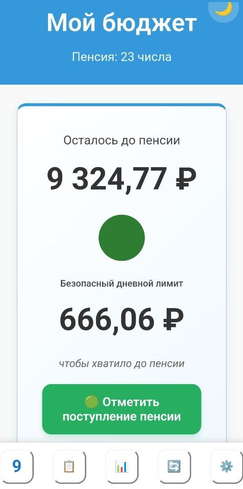
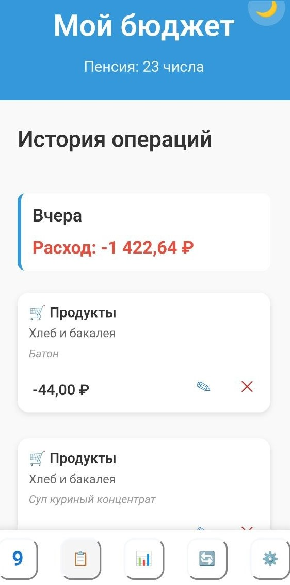
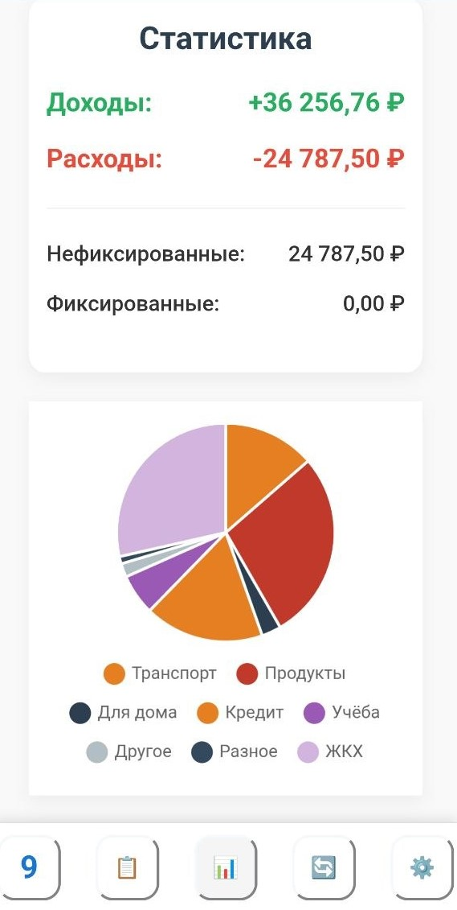
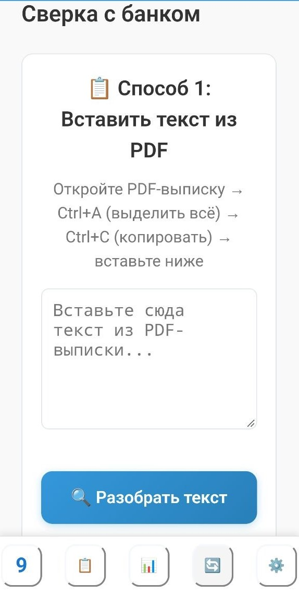
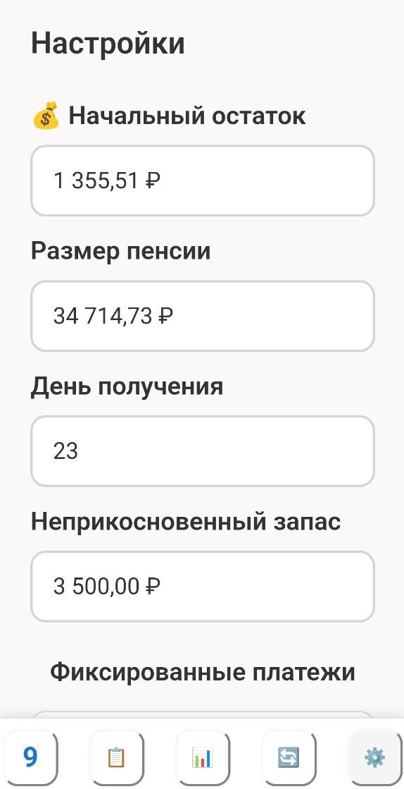

«Мой бюджет» — это приложение для честного учёта личных финансов между фиксированными
поступлениями (например, от пенсии до пенсии). Оно показывает, сколько вы можете тратить каждый день,
чтобы денег хватило до следующего поступления, и помогает не выйти за рамки бюджета.
Приложение работает как на компьютере, так и на смартфоне. На смартфоне его можно установить на рабочий
стол как обычное приложение — тогда оно будет работать даже без интернета.
Главное правило контроля бюджета:
Каждый день достаточно сравнить две цифры: «Осталось до пенсии» в приложении + НЗ = Остаток на счёте в банке.
Если они совпадают — ваш бюджет в порядке. Экран «Сверка» нужен только для детального разбора
расхождений, когда что-то пошло не так.
Общие элементы интерфейса
Каждый экран приложения имеет одинаковую «рамку» — верхнюю шапку и нижнее меню навигации.
Шапка (верхняя часть экрана)
В верхней части любого экрана вы видите синий блок с тремя элементами:
Название приложения — «Мой бюджет» (по центру).
Дата пенсии — под названием, мелким шрифтом: «Пенсия: 23 числа».
Напоминает, когда ждать следующего поступления.
Переключатель темы 🌙/️ — в правом верхнем углу. Нажмите, чтобы переключиться между
светлой и тёмной темой. Выбор запоминается.
📱 Нижнее меню навигации
Внизу любого экрана расположены 5 кнопок для переключения между разделами приложения:
📅 Сегодня — Главный экран (остаток, лимит, кнопка пенсии).
История — Все записи о расходах и доходах.
📊 Статистика — Диаграмма расходов и проценты по категориям.
🔄 Сверка — Проверка записей с банковской выпиской.
⚙️ Настройки — Параметры и данные.
Нажмите на любую кнопку — и вы мгновенно перейдёте на соответствующий экран. Активная кнопка
подсвечивается.
Модуль 1: Экран «Сегодня»
Главный экран — сколько можно потратить сегодня
Когда вы открываете приложение, первым делом вы видите экран «Сегодня». Это ваш главный финансовый компас
на день.

Что здесь показано:
🔵 Остаток до пенсии — крупное число в центре карточки. Это сумма, которая у вас
есть прямо сейчас и которую можно тратить до следующего поступления пенсии.
🟢 Индикатор (цветной кружок) — сигнал о состоянии бюджета:
🟢 Зелёный — всё хорошо, дневной лимит в норме.
Жёлтый — внимание, вы приближаетесь к пределу.
🔴 Красный — тревога, вы вышли за рамки безопасного лимита.
Безопасный дневной лимит — второе число на экране. Это сумма, которую вы можете
тратить каждый день, чтобы денег хватило до пенсии. Под ним мелким шрифтом написано: «чтобы
хватило до пенсии».
Дней осталось — показывает, сколько дней осталось до следующей пенсии. Помогает
понять, на сколько дней нужно растянуть остаток.
💸 Потрачено — показывает, сколько вы уже потратили за текущий период. Позволяет
быстро оценить, насколько активно вы расходуете деньги.
Кнопка «Отметить поступление пенсии» (зелёная)
Нажмите её в день, когда пенсия пришла на счёт. Приложение пересчитает дневной лимит с учётом новой
суммы, запомнит дату начала нового периода, а кнопка превратится в надпись «✅ Пенсия получена:
ДД.ММ.ГГГГ».
⚠️ Важно: если пенсия ещё не пришла, не нажимайте эту кнопку — иначе
дневной лимит будет посчитан неправильно.
Кнопка «Использовать НЗ» (если НЗ > 0)
Позволяет взять деньги из Неприкосновенного Запаса в экстренной ситуации. Приложение спросит сумму и
причину, уменьшит НЗ и запишет операцию.
Блок «Сегодня к оплате» (если есть платежи на сегодня)
Показывает фиксированные платежи, которые нужно оплатить сегодня. У каждого платежа две кнопки:
✓ — отметить как оплаченное.
⏸ — отложить на завтра.
Модуль 2: Экран «История операций»
Журнал всех ваших финансовых записей
Экран «История операций» — это журнал всех ваших финансовых движений: расходов, доходов и фиксированных
платежей. Здесь вы можете увидеть, куда ушли деньги, откуда пришли, и при необходимости исправить или
удалить любую запись.

Как устроен экран
Все записи сгруппированы по дням. Каждый день начинается с шапки, в которой показан
развёрнутый итог за этот день:
Доход — зелёным цветом со знаком плюс (например, +5 000,00 ₽).
Расход — красным цветом со знаком минус (например, −2 350,00 ₽).
Если в день была только одна операция (только доход или только расход) — показывается только она. Если в
день не было операций — шапка не показывается. Под шапкой идут карточки операций в
хронологическом порядке (сверху — более поздние).
Карточка операции
Каждая карточка содержит:
🏷️ Категория и подкатегория — например, «Продукты → Овощи и фрукты». Рядом с
категорией стоит эмодзи для быстрого визуального поиска.
💰 Сумма — справа от категории. Расходы показаны красным цветом со знаком минус,
доходы — зелёным со знаком плюс.
📝 Предмет покупки (если указан) — третья строка карточки, курсивом. Например:
«сосиски, молоко, хлеб». Это поле необязательное.
✏️ Кнопка редактирования (карандаш) — справа внизу карточки. Открывает окно, где
можно изменить категорию, подкатегорию, сумму, дату и предмет покупки.
❌ Кнопка удаления (крестик) — рядом с карандашом. Удаляет запись после
подтверждения.
Как добавить расход
На экране «Сегодня» нажмите синюю кнопку «Записать расход».
В открывшемся окне выберите категорию и подкатегорию.
Введите сумму (стоимость в рублях и через запятую или точку в копейках — приложение
поймёт).
(Необязательно) В поле «Что куплено» напишите конкретные товары.
Нажмите «Сохранить».
Как добавить доход
На экране «Сегодня» нажмите зелёную кнопку «Добавить доход».
Выберите категорию дохода (например, «Подарки», «Подработка», «Возврат долга» и т.д.).
Введите сумму и нажмите «Сохранить».
Доходы увеличивают остаток до пенсии и влияют на дневной лимит — он сразу же изменится в сторону
увеличения.
Как отредактировать или удалить запись
Нажмите ✏️ (карандаш) на нужной карточке, измените поля и нажмите «Сохранить».
Нажмите ❌ (крестик) и подтвердите удаление. ⚠️ Удаление нельзя отменить.
Особые случаи
🔓 Использование НЗ — такие записи помечены оранжевой полоской слева. Их нельзя
редактировать, только удалить (при удалении сумма вернётся в НЗ).
Фиксированные платежи — записи с такой иконкой создаются при оплате фиксированных
платежей (ЖКХ, кредит и т.д.). Они тоже редактируются, как обычные.
Модуль 3: Экран «Статистика»
Куда ушли деньги
Экран «Статистика» показывает полную картину ваших финансов за текущий период (от последней пенсии до
следующей).

Экран состоит из трёх блоков, расположенных сверху вниз:
Блок 1: Сводка по доходам и расходам
💚 Доходы — зелёным цветом со знаком плюс (пенсия + дополнительные доходы).
❤️ Расходы — красным цветом со знаком минус (все траты за период).
Фиксированные — чёрным цветом (регулярные платежи, настроенные в разделе
«Настройки»).
Блок 2: Круговая диаграмма
Наглядно показывает, какие категории нефиксированных расходов занимают большую часть бюджета. Наведите
палец (или курсор) на сектор, чтобы увидеть точную сумму и процент.
Блок 3: Детальная разбивка по подкатегориям
Раздел «По подкатегориям» раскрывает каждую категорию до конкретных статей.
Как читать проценты:
• Процент рядом с категорией (например, ЖКХ 30.6%) — это доля категории от всех
расходов за период.
• Процент рядом с подкатегорией (например, Коммуналка 71.2%) — это доля подкатегории
внутри своей категории.
Если за текущий период вы ещё ничего не записали, вместо диаграммы вы увидите сообщение: «Нет
расходов за этот период».
Модуль 4: Экран «Сверка»
Проверка ваших записей по банковской выписке
Экран «Сверка» позволяет загрузить выписку из банка и автоматически сравнить её с записями в приложении.

Как провести сверку
Получите выписку из банка. Приложение понимает CSV-файлы или текст, скопированный
из PDF.
Загрузите файл или вставьте текст в поле и нажмите «Разобрать текст».
Дождитесь результатов.
Как читать отчёт
✅ Точные совпадения (1 к 1) — операции, которые есть и в банке, и в приложении.
✅ Групповые совпадения — когда одна операция в банке равна сумме нескольких записей
в приложении в один день.
🔴 Не учтено в приложении — операции из выписки, которые вы забыли записать. Рядом
есть кнопка «Добавить» для мгновенного переноса в Историю.
⚪ Не отражено в банке — записи в приложении, отсутствующие в выписке (например,
траты наличными).
💡 Совет: проводите сверку раз в неделю или после крупных покупок для
полной уверенности.
Модуль 5: Экран «Настройки»
Первоначальная настройка и управление данными

Основные параметры
💰 Начальный остаток — сумма на счёте в начале периода. Обычно заполняется
автоматически.
🏦 Размер пенсии — сумма ежемесячного поступления.
📅 День пенсии — число месяца, когда приходит пенсия (например, 23).
🔒 Неприкосновенный запас (НЗ) — сумма, которую вы решили не тратить. Приложение
учитывает её при расчёте лимита, но не включает в доступные траты.
После изменения любого поля приложение автоматически сохранит изменения и пересчитает лимит.
Фиксированные платежи
Здесь вы указываете регулярные платежи, которые списываются каждый месяц (коммуналка, кредит, подписки).
Нажмите «Добавить платёж», введите название, сумму и день списания. Платежи можно
редактировать (✏️) или удалять (❌). Они вычитаются из остатка при расчёте дневного лимита.
Экспорт и импорт данных
Это самый важный раздел для безопасности ваших данных.
📤 Экспорт: нажмите кнопку, скачайте JSON-файл и сохраните его в надёжном месте
(облако, Telegram «Избранное», компьютер).
📥 Импорт: выберите ранее сохранённый JSON-файл для восстановления данных.
Внимание: импорт полностью заменяет текущие данные.
💡 Правило синхронизации: если вы пользуетесь приложением на нескольких устройствах,
договоритесь, какое из них — «мастер». Правки делайте только на мастере, а на остальных импортируйте
данные. Индикатор синхронизации покажет дату последнего экспорта и количество записей.
Удаление записей за период
Позволяет массово удалить все операции за указанный диапазон дат (например, после закрытия периода).
Перед удалением обязательно сделайте экспорт данных.